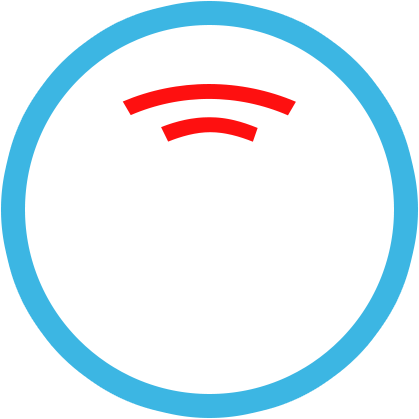

Control your digital camera remotely
SLR IR Remote is an Infrared (IR) Remote app for your HTC One and digital camera.
Make use of the IR Blaster in your HTC One to remotely trigger the shutter on
your Canon, Nikon, Sony Alpha, or Pentax
digital camera.